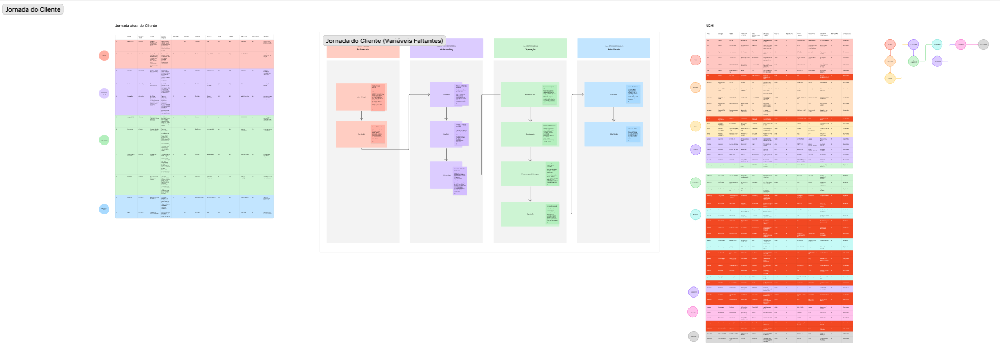
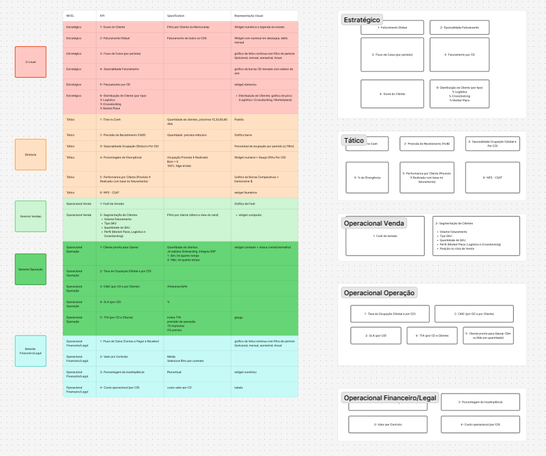

01 · Chronus Performance AI
Desenhei a Torre de Controle: o dado já chega com a decisão
Monitoramento operacional com IA para C-Level, Diretoria e Gerência. O produto aponta o risco e recomenda a ação.
- Papel
- Product Designer
- Período
- 2024 — 2025
- Situação
- Em produção
- Escala
- 5 centros de distribuição
Experimente
Uma releitura navegável da Torre, com dados fictícios, já que o produto em produção é confidencial. Entre como demonstração, veja o que pede decisão logo na primeira tela, abra a recomendação da IA para o CD 2 e aplique: os indicadores de todas as telas se atualizam.
O problema
O dado era capturado sem um fluxo de consumo definido. O resultado: previsão fraca, retrabalho e decisão tomada no feeling.
Reduzir decisões no feeling e acelerar respostas a desvios.
A solução
Uma torre tem andares, e a informação também. Cada nível responde a uma pergunta diferente: o Estratégico lê a saúde do negócio, o Tático controla a execução e o Operacional acompanha o dia a dia.
A IA embarcada vai além de mostrar o número. Ela sinaliza o risco, como um centro operando no limite de SLA, e recomenda a ação, como redistribuir carga entre os centros. Cada tela abre pelo que exige decisão, e os gráficos entram como evidência.
Decisões de design
- A decisão vem antes do gráficoA primeira tela abre pelo que exige ação, cada item com a recomendação da IA e o botão para agir. Os gráficos ficam abaixo, como evidência de quem quiser conferir.
- Da recomendação ao efeito, sem sair do fluxoA pessoa vê o antes e o depois dos indicadores, confirma e acompanha o resultado. A ação pode ser desfeita, o que torna a decisão segura de tomar.
- Um número, uma verdadeTodas as telas leem o mesmo estado. Ao aplicar uma recomendação, ocupação e SLA mudam no Estratégico, no Operacional e nos alertas ao mesmo tempo.
- Estado nunca só por corCrítico, atenção e normal combinam ícone, texto e cor, para a leitura valer também sob pouca luz, em telas ruins ou para quem não distingue cores.
O processo
- Mapeamento de KPIs de ponta a pontaJornada comercial completa, pontos críticos e oportunidades de medição.
- Modelo SCOREstrutura padrão da indústria, descoberta com especialista em excelência operacional e validada com o diretor de logística.
- Entrevistas in locoCEO e diretores de Operação, TI e Comercial, para entender as dores reais de cada nível.
- KPIs por nívelO que mostrar em cada camada: estratégico, tático e operacional.


O resultado
O produto entrou numa operação de peso: cinco centros de distribuição, mais de 40 mil m² de armazenagem e cerca de 350 empresas atendidas. O C-level passou a ler a saúde do negócio, a diretoria ganhou controle da execução e a operação trocou a decisão no feeling por dado confiável.
O MVP virou produto e hoje está em produção no cliente.